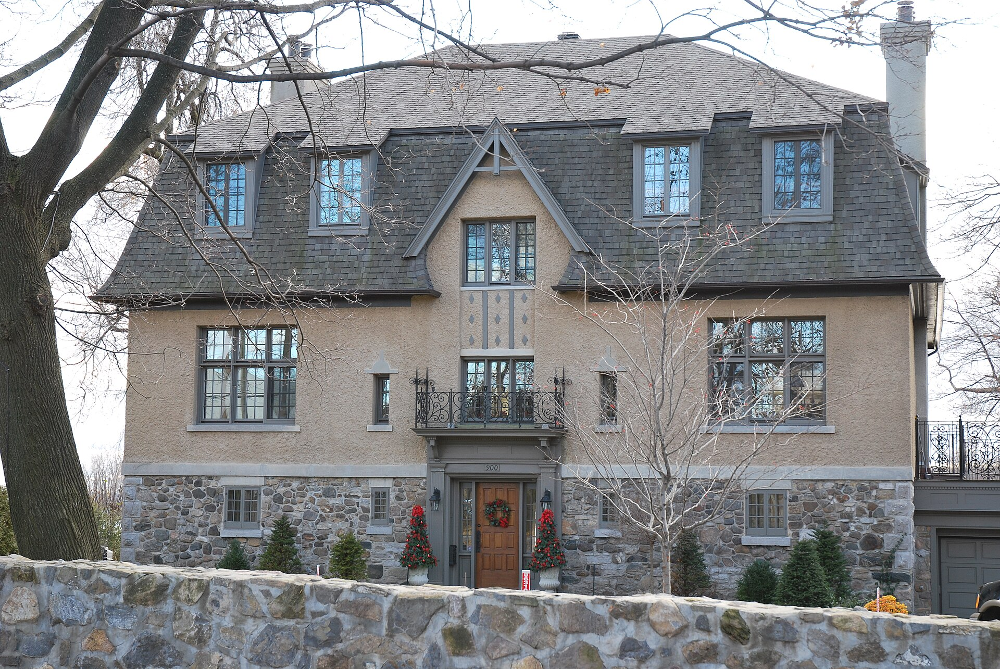
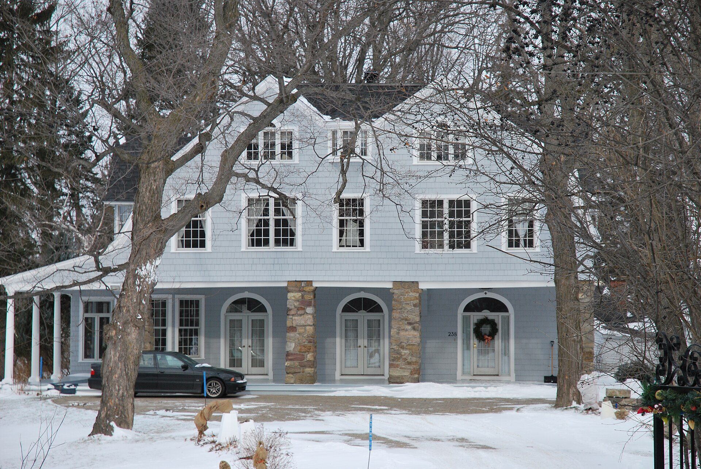

English summer villa on the lake shore La villa anglaise de villégiature

« Maison Beaurivage, 900, chemin du Bord-du-Lac (Dorval) », photo Anne-Marie Dufour, 2010-11-19, Flickr stream *Parcours riverain — Ville de Montréal*; Wikimedia Commons, CC BY 2.0, Flickr licence review passed (verified through the Commons API).

« Maison Edith-Wanklyn, 238, chemin de Senneville (Senneville) », photo Anne-Marie Dufour, 2010-12-10, Flickr stream *Parcours riverain — Ville de Montréal*; Wikimedia Commons, CC BY 2.0, Flickr licence review passed (verified through the Commons API).
The summer house of anglophone Montréal on the western lake shore — free-standing in its own grounds, set back and screened from the road, two to two and a half storeys of shingle over rubble stone, big loose roofs and a deep arcaded verandah facing the water. The railway of 1855 made it possible; sailing, golf and horse racing came with it; and at Dorval speculation on the shore has already taken the two largest of them. One record, two municipalities: the photograph on this card is Senneville's Wanklyn house, and Dorval's maison Beaurivage stands beside it on the type page.
From the late nineteenth century the shores of lac Saint-Louis and the lac des Deux-Montagnes became the summer address of bourgeois Montréal, and the train is what did it. At Dorval the village fed both the summer people and the farmers at once, and the resort came with a whole apparatus — sailing, horse racing, golf, a yacht club, a Protestant chapel of fieldstone built for the villégiateurs in 1898. Île Dorval, bought in 1853 by Sir George Simpson of the Hudson's Bay Company for a summer house in the woods, was cut into fifty-seven lots in 1911, and about fifteen families were summering there by the 1930s; it is still only reachable by boat. At Senneville the same impulse produced something denser and grander, a dozen estates along one country road with their houses turned to the lake and hidden from the chemin, and Parks Canada designated the whole of it. The two places show the same form at two scales, and they show the same erosion: the Senneville fiche records the great lots being cut up and the territory densifying, and Dorval's records speculation on shore land, the disappearance of the great properties and new houses of a size that breaks the street. Ashburton of about 1879 is gone. The stone manor that J. W. McConnell built after it burned in 1963. What is left of that property is the entrance pavilion and one summer house in its gardens.
| Tenure / plan | single-family |
|---|---|
| Storeys | 2–2.5 |
| Roof form | gabled-multi |
| Roof pitch | – |
| Window proportion | – |
| Principal cladding | wood-shingle, fieldstone, cut-stone, stucco, clay-brick |
| Roofing | cedar shingle |
| Garage | detached |
| Lot width | – |
| Front setback | – |
| Side setback | – |
| Front yard green | – |
What Ville de Montréal says about this type
- « Souvent de style Arts and Crafts ou Shingle Style, les résidences agencent des volumes nets et des toitures importantes de façon plus ou moins complexe avec leurs revêtements de pierre taillée ou de moellons, brique, bois, stuc et toitures en bardeaux de cèdre qui témoignent « … [of a] sophisticated nostalgia for a rustic way of life and for the rural craft industry » (Friedman, 2000). »
- « Le bâti y est pour la plupart implanté du côté du lac et éloigné du chemin. »
- « À la fin du XIXe siècle, les rives du lac Saint-Louis dans l'ouest de l'île de Montréal deviennent des lieux de villégiature attrayants pour la société bourgeoise montréalaise. Le village de Dorval dessert les estivants et les agriculteurs qui s'y côtoient. » (§ 2)
- « La seconde phase de développement du territoire se concrétise avec la formation du village et le développement en parallèle de la villégiature et des activités telles que la voile, les courses de chevaux et le golf, sous l'impulsion de l'arrivée du train qui permet une plus grande mobilité entre le centre-ville et la banlieue. » (§ 3.1)
- « … il ne reste plus rien de l'opulente résidence d'été appelée Ashburton, construite dans les années 1879, ni de la maison bâtie par la suite par l'industriel John Wilson McConnell, un magnifique manoir de pierre qui a été détruit par un incendie en 1963. Par contre, il subsiste le pavillon d'entrée et une résidence d'été entourée de magnifiques jardins. » (7.E.4)
- « Autrefois connue sous le nom de « Bel-Air », nom donné par l'architecte Alfred Brown à son manoir de pierre de style anglais, cette propriété a été vendue après son décès à un club privé prestigieux (le Forest and Stream Club), qui l'occupe toujours. » (7.E.5)
- « L'île n'est accessible que par traversier, ce qui a sans aucun doute contribué à préserver son caractère bucolique évocateur des années 1920-1940, période où la majorité des chalets se sont construits. » (7.E.6)
- Free-standing on a large treed lot between the shore road and the water, set well back from the road and, at Senneville, deliberately screened from it — Parks Canada records that the siting and planting of most Senneville houses "prevents a view to the buildings from chemin Senneville".
- At Dorval the belt runs along the chemin du Bord-du-Lac, the old shore road, and out onto the points that reach into lac Saint-Louis. Île Dorval was divided into 57 lots for summer houses in 1911 and is still reachable only by ferry.
- Boat clubs, a yacht club, horse racing and golf belong to the same siting. The Dorval cahier treats them as part of the phase, not as background.
- Two to two and a half storeys, informal in plan, with the volumes and roofs put together loosely rather than symmetrically — the Senneville fiche says the houses « agencent des volumes nets et des toitures importantes de façon plus ou moins complexe ».
- Large roofs carrying dormers, and deep verandahs across the front, often arcaded on heavy rubble piers.
- Smaller and plainer versions of the same idea line the same shore — the modest one-storey chalets and cottages of Dorval's avenue Saint-Charles, avenues Roy and Lepage, boulevard Pine Beach and secteur Ouest, many later converted to year-round houses.
- Wide arched openings under the verandah roof, heavy stone piers, shingled wall planes carried unbroken around corners.
- Grouped windows, often in twos and threes, in plain flat casings; no source gives a proportion.
- Wood shingle over the upper walls and the roof; rubble or cut stone below. The Senneville fiche lists « revêtements de pierre taillée ou de moellons, brique, bois, stuc et toitures en bardeaux de cèdre ».
- Fieldstone alone where the building is earlier or plainer — Dorval's chapelle St. Mark of 1898, built « en pierre des champs » for the Protestant summer people, and the stone manor Alfred Brown called Bel-Air.
The West Island has no per-type typology document, so this record is assembled from sector paragraphs in two of the twenty-seven 2005 Ville de Montréal évaluation cahiers, plus the federal designation record for Senneville. Fields left null and why: `window_proportion` — neither cahier nor Parks Canada describes a window proportion anywhere in either place; `roof.pitch_deg` — no source gives a pitch; `lot_width_m`, `setback_front_m`, `setback_side_m`, `front_yard_green_pct` — no source measures a lot or a setback in the West Island, and although both sources insist on deep setbacks in words ("set well back from the road", « éloigné du chemin »), a word is not a number; `sectors` — a shared record cannot carry sector codes that exist in only one of its places. `garage: detached` is entered from the Senneville fiche's list of ancillary buildings, which includes a garage, and is weak for Dorval, where no source mentions one. `storeys` is read off the photographs and off the phrase « volumes nets et toitures importantes », not off a stated figure. On styles, this record departs from the Part 11 brief: the brief specifies `[queen-anne, shingle-style]`, and `shingle-style` is well attested — Parks Canada names "the Shingle-style, E.M. Angus house, 'Wanklyn'", and the Senneville fiche says « souvent de style Arts and Crafts ou Shingle Style » — but no retrieved source names Queen Anne anywhere in Dorval or Senneville, so `queen-anne` is dropped rather than asserted, and `arts-and-crafts` is carried in its place because both the Senneville fiche and the Lachine cahier, for the same villégiature belt, name it explicitly. The styles Parks Canada does name at Senneville besides Shingle — Neo-Gothic, Neo-Tudor and Château — have no id in this project's `styles.yaml` and are therefore recorded in prose only.
- Senneville's villas fall inside a National Historic Site, which is a federal commemorative designation and not a control on private alteration. Dorval's have no ensemble instrument of any kind.
- Both cahiers name attrition as the live risk. Dorval's says speculation on shore land and the disappearance of the great properties or of their lot patterns is a problem to be reckoned with, and that speculation on old houses and their lots for large new houses works against the village character. The Senneville fiche records « un morcellement des lots des grandes propriétés et à la densification rapide du territoire ».
- Two of the named Dorval villas are already gone — Ashburton, built about 1879, and the McConnell stone manor that replaced it, burned in 1963.
Same word elsewhere
- Regency villa (Québec City)
- English summer villa on the lake shore (Senneville)
- Picturesque villa and country house (Westmount)
Same form elsewhere
- Regency villa (Québec City)
- English summer villa on the lake shore (Senneville)
- Picturesque villa and country house (Westmount)
Same period elsewhere
- Family A company houses (models A1–A8) (Arvida (borough of Jonquière, Saguenay))
- Family B company houses (models B1–B4) (Arvida (borough of Jonquière, Saguenay))
- Family C company houses (models C1–C6) (Arvida (borough of Jonquière, Saguenay))
- Family D company houses (models D1–D5) (Arvida (borough of Jonquière, Saguenay))
- Family M houses (models M1–M11), regionalist neo-vernacular (Arvida (borough of Jonquière, Saguenay))
- Family F semi-detached houses (models F1–F18) (Arvida (borough of Jonquière, Saguenay))
- Families P, Q, S and T (paired and single models along boulevard du Saguenay and rues Powell, Neilson, Berthier, Parks, Joule) (Arvida (borough of Jonquière, Saguenay))
- Family R row houses (models R2–R4) (Arvida (borough of Jonquière, Saguenay))
- Families E, G, H, J, K, L, N, Y and Z (Arvida (borough of Jonquière, Saguenay))
- Wartime Housing Ltd. houses (Arvida (borough of Jonquière, Saguenay))
- Postwar bungalow (Baie-D'Urfé)
- Québec house of neoclassical inspiration (Charlesbourg (Trait-Carré))
- Mansard house (Charlesbourg (Trait-Carré))
- Boomtown building (Charlesbourg (Trait-Carré))
- Cubic house (Four Square) (Charlesbourg (Trait-Carré))
- Industrial vernacular house (Charlesbourg (Trait-Carré))
- Vernacular cottage (Charlesbourg (Trait-Carré))
- Post-war residence (bungalow) (Charlesbourg (Trait-Carré))
- Mixed-use building with a flat roof (édifice mixte à toit plat) (Gatineau)
- First-generation North American bungalow (bungalow nord-américain de première génération) (Gatineau)
- Side-gable duplex (duplex à mur pignon latéral) (Gatineau)
- Central-gable house (maison à pignon central) (Gatineau)
- Complex gabled-roof house (maison à toit complexe à pignon) (Gatineau)
- Mansard-roofed house with gable wall on the façade (maison à toit mansardé avec mur pignon en façade) (Gatineau)
- One-and-a-half-storey wooden matchstick house (maison allumette en bois d'un étage et demi) (Gatineau)
- Wood matchstick house of two to two and a half storeys (maison allumette en bois de deux à deux étages et demi) (Gatineau)
- Brick matchbox house, two to two and a half storeys (maison allumette en brique de deux à deux étages et demi) (Gatineau)
- Cubic house (maison cubique) (Gatineau)
- CIP executive's house (maison de cadre de la CIP) (Gatineau)
- Flat-roofed wood house (maison en bois à toit plat) (Gatineau)
- Flat-roofed brick house (maison en brique à toit plat) (Gatineau)
- L-plan house with a two-slope (gable) roof (maison avec plan en L à toit à deux versants) (Gatineau)
- English-revival stone house (Hampstead)
- Postwar detached house (Hampstead)
- Regency cottage (Île d'Orléans)
- Second Empire style and the mansard house (Île d'Orléans)
- Victorian eclecticism (Île d'Orléans)
- American vernacular cottage (Île d'Orléans)
- Arts and Crafts architecture (Île d'Orléans)
- Boomtown house (Île d'Orléans)
- Cubic house (Four Square) (Île d'Orléans)
- Modernism (Île d'Orléans)
- Québec regionalism (Île d'Orléans)
- Postwar bungalow (Lachine (borough of Montréal))
- Bourgeois brick house in the Victorian taste (Lachine (borough of Montréal))
- Brick duplex and triplex, detached or in continuous alignment (Lachine (borough of Montréal))
- Small one-storey brick house, wider than deep, with a crown (Lachine (borough of Montréal))
- The maison « Gameroff » — contractor-built house of the 1950s–1970s quarters (Lachine (borough of Montréal))
- Franco-Québécois transitional house (Lévis)
- Québécois traditional house (Lévis)
- Regency cottage (Lévis)
- Neo-Gothic (Lévis)
- Neoclassical house (Lévis)
- Agricultural vernacular building (Lévis)
- Second Empire house (Lévis)
- Victorian house (Lévis)
- American vernacular house (Lévis)
- Mixed-use or commercial building (Lévis)
- Beaux-Arts house (Lévis)
- Boomtown house (Lévis)
- Cubic house (maison cubique) (Lévis)
- Flat-roofed house (Lévis)
- Arts & Crafts house (Arts & métiers) (Lévis)
- Wartime housing dwelling (Lévis)
- Modernist building (Lévis)
- Village house of Longue-Pointe (Mercier–Hochelaga-Maisonneuve (borough of Montréal))
- Company workers' house of the Hudon mill, rue Saint-Germain (Mercier–Hochelaga-Maisonneuve (borough of Montréal))
- Bourgeois residence of the cité, Beaux-Arts (Mercier–Hochelaga-Maisonneuve (borough of Montréal))
- Shop-and-dwellings block on the commercial artery (Mercier–Hochelaga-Maisonneuve (borough of Montréal))
- Three-storey workers' plex (Mercier–Hochelaga-Maisonneuve (borough of Montréal))
- Brick bungalow of the 1950s Mercier developments (Mercier–Hochelaga-Maisonneuve (borough of Montréal))
- Veterans' house, to the Wartime Housing Limited model (Mercier–Hochelaga-Maisonneuve (borough of Montréal))
- Garden City House (Town of Mount Royal)
- Faubourg House (Town of Mount Royal)
- Faubourg Apartment Block (Town of Mount Royal)
- Canadian House (Town of Mount Royal)
- New England House (Town of Mount Royal)
- New England Apartment Block (Town of Mount Royal)
- Georgian House (Town of Mount Royal)
- English Manor House (Town of Mount Royal)
- Semi-detached single-family house (Outremont (borough of Montréal))
- Semi-detached duplex (Outremont (borough of Montréal))
- Detached single-family house (Outremont (borough of Montréal))
- Opulent detached residence (Outremont (borough of Montréal))
- Apartment building (conciergerie) (Outremont (borough of Montréal))
- Modern house on the flank (Outremont (borough of Montréal))
- Faubourg house (Le Plateau-Mont-Royal (borough of Montréal))
- Detached urban house (Le Plateau-Mont-Royal (borough of Montréal))
- Duplex without front setback (Le Plateau-Mont-Royal (borough of Montréal))
- Duplex with front setback (Le Plateau-Mont-Royal (borough of Montréal))
- Duplex with exterior stair (Le Plateau-Mont-Royal (borough of Montréal))
- Triplex with interior stair (Le Plateau-Mont-Royal (borough of Montréal))
- Triplex with exterior stair (Le Plateau-Mont-Royal (borough of Montréal))
- Multiplex (Le Plateau-Mont-Royal (borough of Montréal))
- Row urban house (Le Plateau-Mont-Royal (borough of Montréal))
- Apartment block without courtyard (Le Plateau-Mont-Royal (borough of Montréal))
- Apartment block with courtyard (Le Plateau-Mont-Royal (borough of Montréal))
- Small apartment building (Le Plateau-Mont-Royal (borough of Montréal))
- Traditional Québec house of the village core (Pointe-Claire)
- Postwar bungalow (Pointe-Claire)
- Cubique — massive symmetrical block, imposing gallery, low hipped roof (Pointe-Claire)
- Village Boomtown house, two storeys, flat or low-pitch roof behind a crown (Pointe-Claire)
- Veterans' house on the Wartime Housing Limited model, c. 1947 (Pointe-Claire)
- Neo-Gothic house, villa or cottage (Québec City)
- Québécois neoclassical house (Québec City)
- Regency cottage (Québec City)
- Regency villa (Québec City)
- Mansard-roofed house (Québec City)
- Rudimentary faubourg house (Québec City)
- Boomtown house and shop-house (Québec City)
- Cubic house (Four Square) (Québec City)
- Flat-roofed faubourg house (Québec City)
- Industrial-vernacular cottage (Québec City)
- Neo-Queen Anne house (Québec City)
- Neo-Renaissance house and mixed-use block (Québec City)
- Neo-Tudor house (Québec City)
- Plex — superposed dwellings (Québec City)
- Apartment block with a central stairwell (Québec City)
- Arts and Crafts house (Québec City)
- Bungalow (Québec City)
- Camp and villégiature chalet (Québec City)
- Dutch Colonial Revival house (Québec City)
- International Style house (residential) (Québec City)
- Neo-Georgian house (Québec City)
- Prairie house (Frank Lloyd Wright inspiration) (Québec City)
- Wartime Housing house (Cape Cod) (Québec City)
- Maison shoebox (Rosemont–La Petite-Patrie (borough of Montréal))
- Triplex with exterior stair (Rosemont–La Petite-Patrie (borough of Montréal))
- Duplex with exterior stair (Rosemont–La Petite-Patrie (borough of Montréal))
- Duplex with interior stair and paired entrances (Rosemont–La Petite-Patrie (borough of Montréal))
- Detached house of the Cité-Jardin du Tricentenaire (Rosemont–La Petite-Patrie (borough of Montréal))
- Semi-detached duplex with rear garage, Art déco manner (Rosemont–La Petite-Patrie (borough of Montréal))
- Conciergerie (Rosemont–La Petite-Patrie (borough of Montréal))
- Mansard-roofed house of Second Empire influence (Saint-Lambert)
- Queen Anne style house (Saint-Lambert)
- Boomtown house with false mansard (Saint-Lambert)
- Boomtown house with crown (parapet or cornice) (Saint-Lambert)
- Cubic (Four Square) house (Saint-Lambert)
- House of Arts and Crafts influence (Saint-Lambert)
- Multi-dwelling building of plex type (Saint-Lambert)
- The "King Cottage" (Saint-Lambert)
- The modern house (including the bungalow) (Saint-Lambert)
- Two-storey clapboard village house of the îlot villageois (Sainte-Anne-de-Bellevue)
- Traditional Québec house of the village core (Sainte-Anne-de-Bellevue)
- Garden City Press workers' house (Sainte-Anne-de-Bellevue)
- Postwar bungalow (Sainte-Anne-de-Bellevue)
- English summer villa on the lake shore (Senneville)
- Arts and Crafts country estate (Senneville)
- Postwar bungalow (Senneville)
- Boomtown house (Le Sud-Ouest (Montréal))
- Duplex with interior stair (Le Sud-Ouest (Montréal))
- Three-storey duplex (Le Sud-Ouest (Montréal))
- Triplex with interior stair (Le Sud-Ouest (Montréal))
- Urban house (Le Sud-Ouest (Montréal))
- Apartment house (Le Sud-Ouest (Montréal))
- Duplex with exterior stair (Le Sud-Ouest (Montréal))
- Multiplex (Le Sud-Ouest (Montréal))
- Raised duplex (Le Sud-Ouest (Montréal))
- Triplex with exterior stair (Le Sud-Ouest (Montréal))
- Apartment building (lift-served) (Le Sud-Ouest (Montréal))
- Conciergerie (walk-up apartment block) (Le Sud-Ouest (Montréal))
- Town house (post-1960 project housing) (Le Sud-Ouest (Montréal))
- Veterans' house (Le Sud-Ouest (Montréal))
- Lower-town company house (Ross and Macdonald, 1918–1923) (Témiscaming)
- Upper-district company house (Somerville, 1925–1950) (Témiscaming)
- Maison cossue of rue Saint-Louis (Vieux-Terrebonne)
- Neoclassical Québécois stone house (Vieux-Terrebonne)
- Small-gabarit vernacular village house of the Bas-de-la-Côte (Vieux-Terrebonne)
- Well-to-do bourgeois house in stone and brick (maison cossue) (Trois-Rivières)
- The 1908 reconstruction block — brick, flat-roofed, built all at once (Trois-Rivières)
- Boomtown house (Trois-Rivières)
- Immeuble à logements — the plex of superposed flats (Trois-Rivières)
- Cubic house (Four-square) (Trois-Rivières)
- Arts & Crafts house (Trois-Rivières)
- Three-storey plex with exterior stair (Verdun (borough of Montréal))
- Two semi-detached duplexes, or a three-dwelling building, with deep front balconies (Verdun (borough of Montréal))
- Three-storey commercial block with dwellings above and alcove balconies (Verdun (borough of Montréal))
- National Housing Act house — 1½ storeys, brick, to prize-winning plans (Verdun (borough of Montréal))
- Residential tower, île des Sœurs (Verdun (borough of Montréal))
- Row duplex of the 1950s (Verdun (borough of Montréal))
- Maison-magasin and warehouse with dwellings above (Ville-Marie (Montréal))
- Freestanding greystone mansion (Ville-Marie (Montréal))
- Greystone terrace (Ville-Marie (Montréal))
- Workers' house with carriage gate (Ville-Marie (Montréal))
- Rural or village house (Villeray–Saint-Michel–Parc-Extension)
- Shoebox of the early 20th century (Villeray–Saint-Michel–Parc-Extension)
- Boomtown house (Villeray–Saint-Michel–Parc-Extension)
- Plex of the early 20th century (Villeray–Saint-Michel–Parc-Extension)
- Apartment building of the early 20th century — the conciergerie (Villeray–Saint-Michel–Parc-Extension)
- Shoebox of the mid-20th century (Villeray–Saint-Michel–Parc-Extension)
- Post-war house (Villeray–Saint-Michel–Parc-Extension)
- Post-war semi-detached house (Villeray–Saint-Michel–Parc-Extension)
- Plex of the mid-20th century (Villeray–Saint-Michel–Parc-Extension)
- Apartment building of the mid-20th century — the walk-up (Villeray–Saint-Michel–Parc-Extension)
- Picturesque villa and country house (Westmount)
- Greystone row house (Westmount)
- Greystone triplex with exterior stair (Westmount)
- Mansard-roofed house of Second Empire influence (Westmount)
- Queen Anne house (Westmount)
- Richardsonian Romanesque house (Westmount)
- Semi-detached brick house (Westmount)
- Eclectic prestige house of the summit (Westmount)
- Tudor Revival house (Westmount)
- Arts and Crafts semi-detached house (Westmount)
- Interwar apartment house (Westmount)
- Modernist residential tower (Westmount)
Same style elsewhere
- CIP executive's house (maison de cadre de la CIP) (Gatineau)
- English-revival stone house (Hampstead)
- Arts and Crafts architecture (Île d'Orléans)
- Arts & Crafts house (Arts & métiers) (Lévis)
- Garden City House (Town of Mount Royal)
- Opulent detached residence (Outremont (borough of Montréal))
- Arts and Crafts house (Québec City)
- Prairie house (Frank Lloyd Wright inspiration) (Québec City)
- House of Arts and Crafts influence (Saint-Lambert)
- English summer villa on the lake shore (Senneville)
- Arts and Crafts country estate (Senneville)
- Upper-district company house (Somerville, 1925–1950) (Témiscaming)
- Arts & Crafts house (Trois-Rivières)
- Arts and Crafts semi-detached house (Westmount)